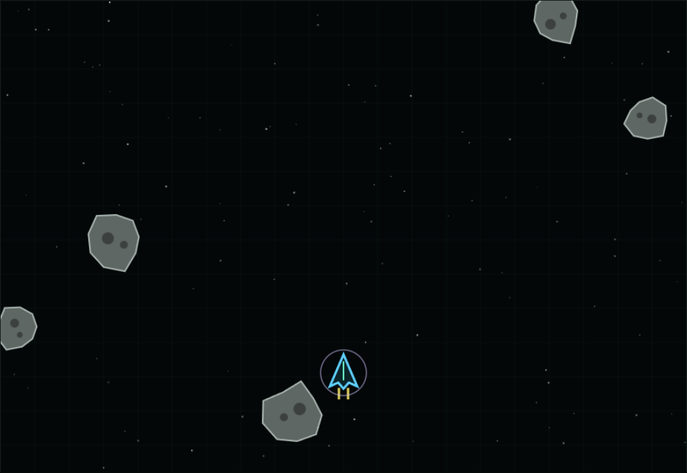
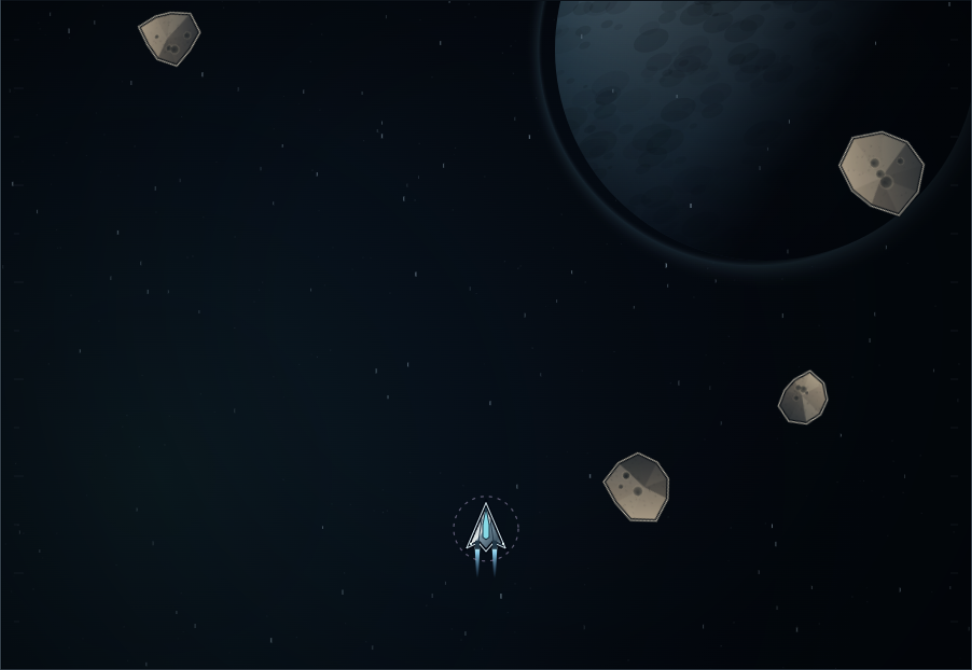
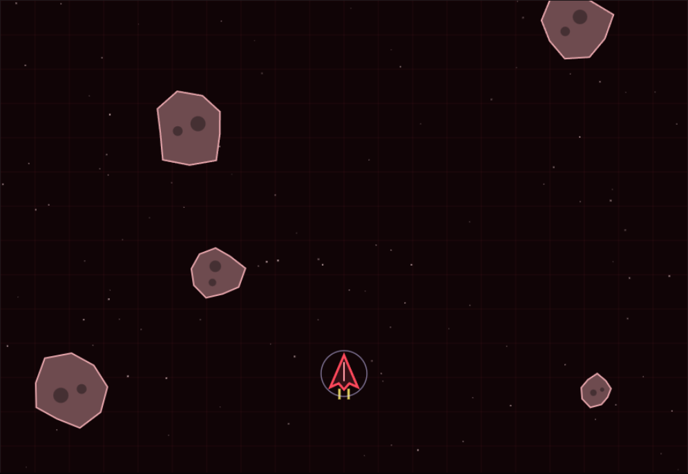
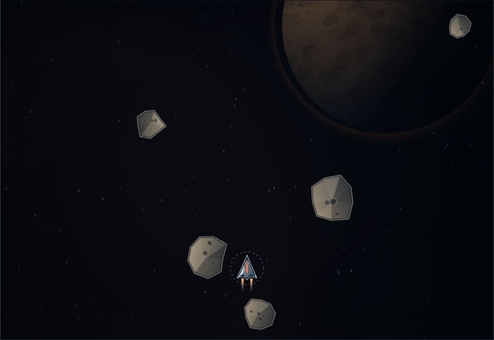
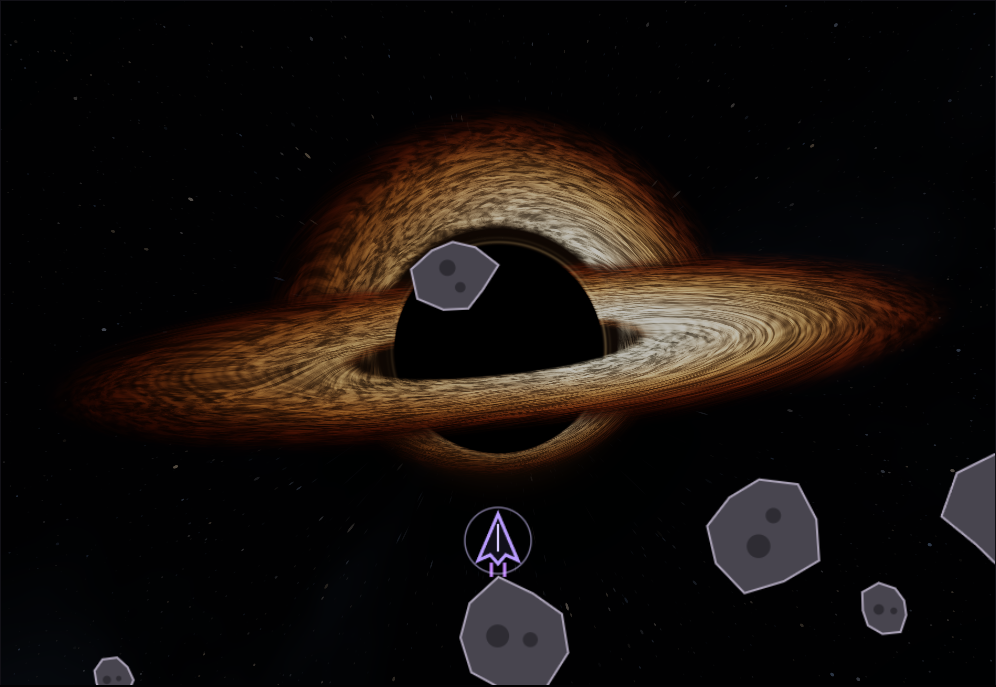
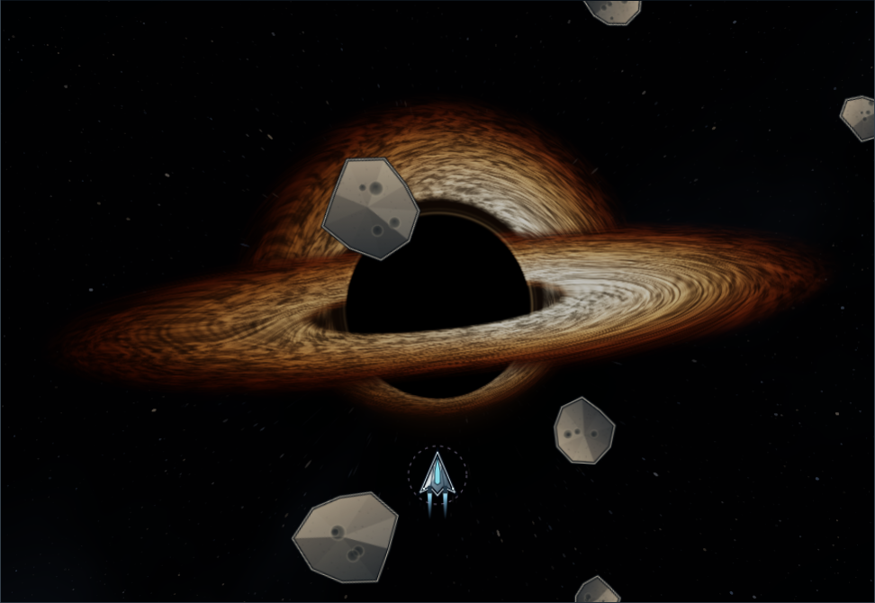
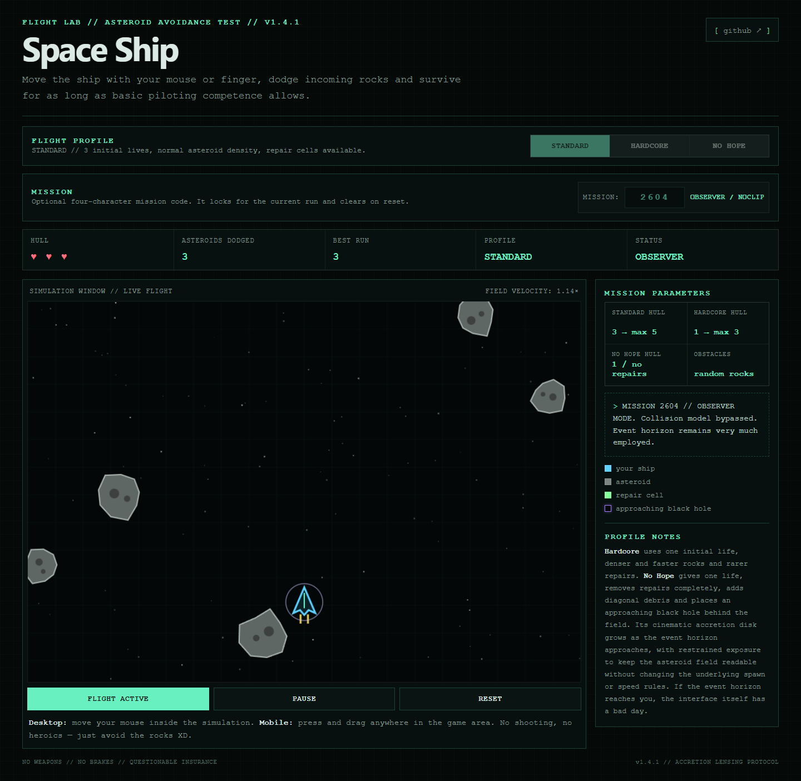
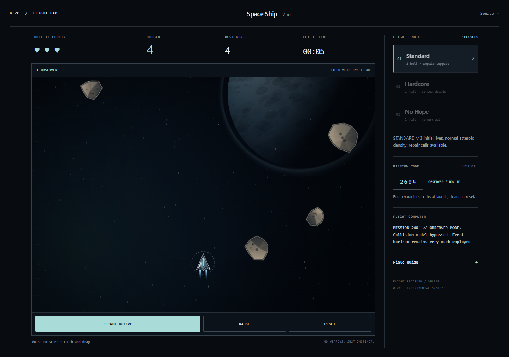
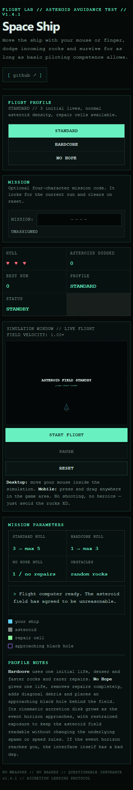
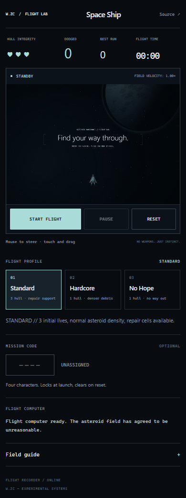

A compact flight deck, a clear instrument strip and a new procedural scene. The original 900×620 playfield and game rules are preserved. Black Hole's approved renderer is unchanged.
Actual Canvas/WebGL frames captured at fixed simulation steps and encoded at 24 FPS. A visual montage, not a real-time performance measurement.









